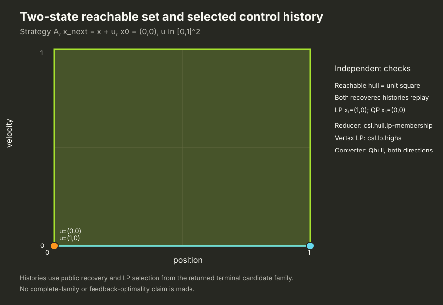
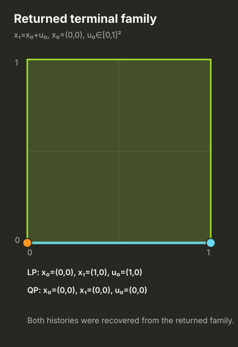
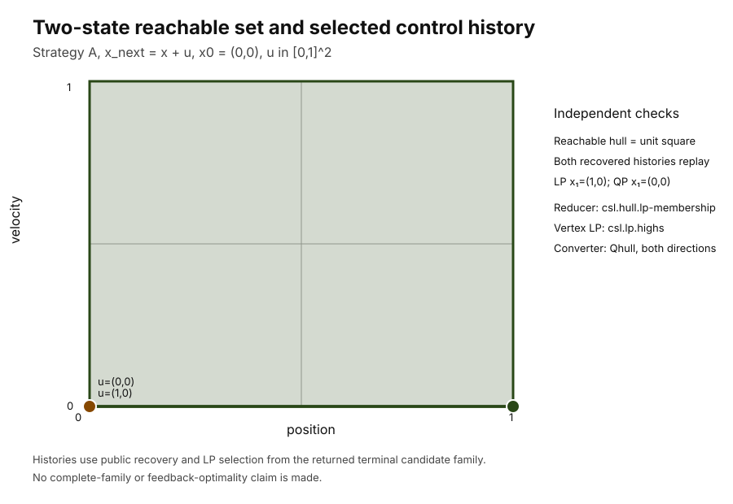
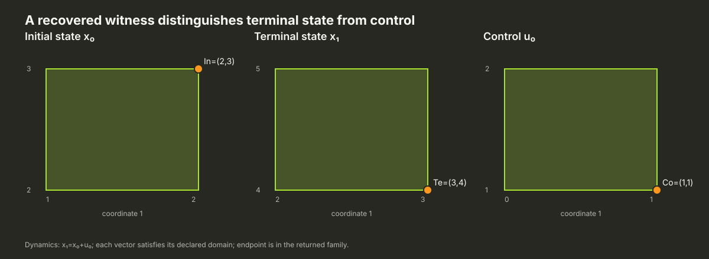
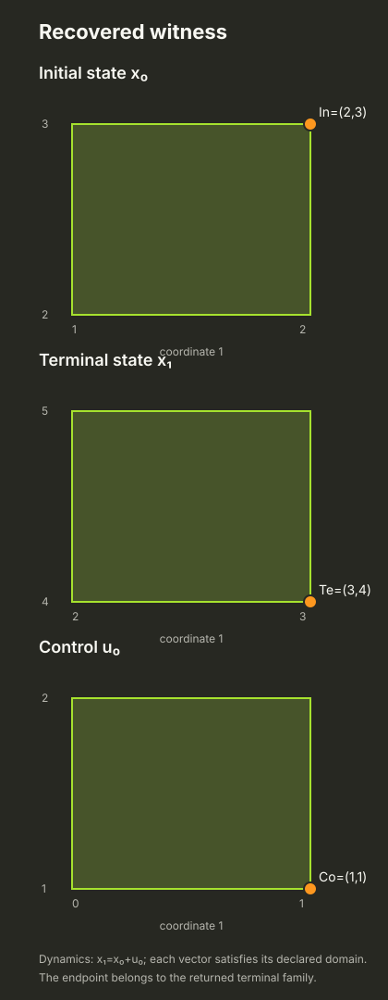
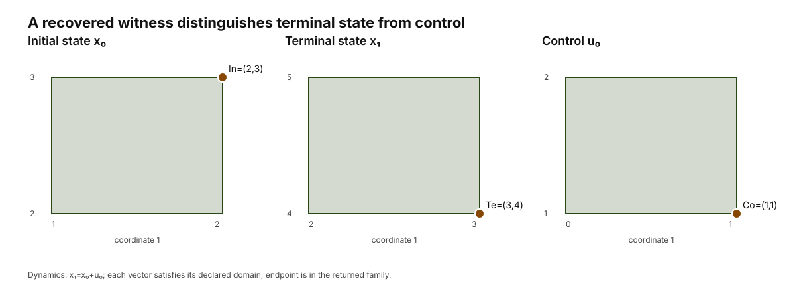

Source-qualified follow-up · issue #944 · capture commit ee677acf13fb
Run the admitted Strategy A choices through one small control task
This is a one-step nominal open-loop candidate-family construction through the public Strategy A API, with public joint-history recovery and a separate numerical history-selection LP. It is not feedback/MPC completion, a full-family proof, or a global optimality claim.
Declared task
One transition with x₁ = A x₀ + B u₀:
A = [[1, 0], [0, 1]] B = [[1, 0], [0, 1]] c = [0, 0]
x₀ = [0, 0] X₀ = [−1,1] × [−1,1] U = [0,1] × [0,1] X₁ = [0,1] × [0,1]
linear terminal objective c = [−1,0]; quadratic objective H = [[2,0],[0,2]], center = [0,0]
The selected histories are recovered from returned terminal candidate families and checked from the saved numeric values.



Choice accounting
All 64 admitted attempts completed through their declared pipeline roles. The other 64 tuples are Phase-I/nonzero-objective contract exclusions.
- 64 completed
- 64 structural contract exclusion
Every admitted role selection and its status is in the CSV and raw record. Faithful legacy hull order/status evidence is retained in each source-index trace.
| Vertex reducer | Vertex LP | Terminal optimizer | Attempts | Complete | Numeric refusal |
|---|---|---|---|---|---|
| csl.hull.grouped-membership | csl.lp.highs | csl.convex.highs | 1 | 1 | 0 |
| csl.hull.grouped-membership | csl.lp.highs | csl.lp.highs | 3 | 1 | 0 |
| csl.hull.grouped-membership | phase-one-bland | csl.convex.highs | 1 | 1 | 0 |
| csl.hull.grouped-membership | phase-one-bland | csl.lp.highs | 3 | 1 | 0 |
| csl.hull.grouped-membership | phase-one-priority-tie | csl.convex.highs | 1 | 1 | 0 |
| csl.hull.grouped-membership | phase-one-priority-tie | csl.lp.highs | 3 | 1 | 0 |
| csl.hull.itis17.a43-artificial-basis | csl.lp.highs | csl.convex.highs | 1 | 1 | 0 |
| csl.hull.itis17.a43-artificial-basis | csl.lp.highs | csl.lp.highs | 3 | 1 | 0 |
| csl.hull.itis17.a43-artificial-basis | phase-one-bland | csl.convex.highs | 1 | 1 | 0 |
| csl.hull.itis17.a43-artificial-basis | phase-one-bland | csl.lp.highs | 3 | 1 | 0 |
| csl.hull.itis17.a43-artificial-basis | phase-one-priority-tie | csl.convex.highs | 1 | 1 | 0 |
| csl.hull.itis17.a43-artificial-basis | phase-one-priority-tie | csl.lp.highs | 3 | 1 | 0 |
| csl.hull.itis17.a43-certified-basis-reuse | csl.lp.highs | csl.convex.highs | 1 | 1 | 0 |
| csl.hull.itis17.a43-certified-basis-reuse | csl.lp.highs | csl.lp.highs | 3 | 1 | 0 |
| csl.hull.itis17.a43-certified-basis-reuse | phase-one-bland | csl.convex.highs | 1 | 1 | 0 |
| csl.hull.itis17.a43-certified-basis-reuse | phase-one-bland | csl.lp.highs | 3 | 1 | 0 |
| csl.hull.itis17.a43-certified-basis-reuse | phase-one-priority-tie | csl.convex.highs | 1 | 1 | 0 |
| csl.hull.itis17.a43-certified-basis-reuse | phase-one-priority-tie | csl.lp.highs | 3 | 1 | 0 |
| csl.hull.itis17.a43-largest-norm-tie | csl.lp.highs | csl.convex.highs | 1 | 1 | 0 |
| csl.hull.itis17.a43-largest-norm-tie | csl.lp.highs | csl.lp.highs | 3 | 1 | 0 |
| csl.hull.itis17.a43-largest-norm-tie | phase-one-bland | csl.convex.highs | 1 | 1 | 0 |
| csl.hull.itis17.a43-largest-norm-tie | phase-one-bland | csl.lp.highs | 3 | 1 | 0 |
| csl.hull.itis17.a43-largest-norm-tie | phase-one-priority-tie | csl.convex.highs | 1 | 1 | 0 |
| csl.hull.itis17.a43-largest-norm-tie | phase-one-priority-tie | csl.lp.highs | 3 | 1 | 0 |
| csl.hull.itis17.a44-incremental-lp | csl.lp.highs | csl.convex.highs | 1 | 1 | 0 |
| csl.hull.itis17.a44-incremental-lp | csl.lp.highs | csl.lp.highs | 3 | 1 | 0 |
| csl.hull.itis17.a44-incremental-lp | phase-one-bland | csl.convex.highs | 1 | 1 | 0 |
| csl.hull.itis17.a44-incremental-lp | phase-one-bland | csl.lp.highs | 3 | 1 | 0 |
| csl.hull.itis17.a44-incremental-lp | phase-one-priority-tie | csl.convex.highs | 1 | 1 | 0 |
| csl.hull.itis17.a44-incremental-lp | phase-one-priority-tie | csl.lp.highs | 3 | 1 | 0 |
| csl.hull.itis17.a44-paper-farthest-incremental-lp | csl.lp.highs | csl.convex.highs | 1 | 1 | 0 |
| csl.hull.itis17.a44-paper-farthest-incremental-lp | csl.lp.highs | csl.lp.highs | 3 | 1 | 0 |
| csl.hull.itis17.a44-paper-farthest-incremental-lp | phase-one-bland | csl.convex.highs | 1 | 1 | 0 |
| csl.hull.itis17.a44-paper-farthest-incremental-lp | phase-one-bland | csl.lp.highs | 3 | 1 | 0 |
| csl.hull.itis17.a44-paper-farthest-incremental-lp | phase-one-priority-tie | csl.convex.highs | 1 | 1 | 0 |
| csl.hull.itis17.a44-paper-farthest-incremental-lp | phase-one-priority-tie | csl.lp.highs | 3 | 1 | 0 |
| csl.hull.lp-membership | csl.lp.highs | csl.convex.highs | 1 | 1 | 0 |
| csl.hull.lp-membership | csl.lp.highs | csl.lp.highs | 3 | 1 | 0 |
| csl.hull.lp-membership | phase-one-bland | csl.convex.highs | 1 | 1 | 0 |
| csl.hull.lp-membership | phase-one-bland | csl.lp.highs | 3 | 1 | 0 |
| csl.hull.lp-membership | phase-one-priority-tie | csl.convex.highs | 1 | 1 | 0 |
| csl.hull.lp-membership | phase-one-priority-tie | csl.lp.highs | 3 | 1 | 0 |
| csl.hull.ordered-membership | csl.lp.highs | csl.convex.highs | 1 | 1 | 0 |
| csl.hull.ordered-membership | csl.lp.highs | csl.lp.highs | 3 | 1 | 0 |
| csl.hull.ordered-membership | phase-one-bland | csl.convex.highs | 1 | 1 | 0 |
| csl.hull.ordered-membership | phase-one-bland | csl.lp.highs | 3 | 1 | 0 |
| csl.hull.ordered-membership | phase-one-priority-tie | csl.convex.highs | 1 | 1 | 0 |
| csl.hull.ordered-membership | phase-one-priority-tie | csl.lp.highs | 3 | 1 | 0 |
| csl.hull.phase-one-basis-bulk | csl.lp.highs | csl.convex.highs | 1 | 1 | 0 |
| csl.hull.phase-one-basis-bulk | csl.lp.highs | csl.lp.highs | 3 | 1 | 0 |
| csl.hull.phase-one-basis-bulk | phase-one-bland | csl.convex.highs | 1 | 1 | 0 |
| csl.hull.phase-one-basis-bulk | phase-one-bland | csl.lp.highs | 3 | 1 | 0 |
| csl.hull.phase-one-basis-bulk | phase-one-priority-tie | csl.convex.highs | 1 | 1 | 0 |
| csl.hull.phase-one-basis-bulk | phase-one-priority-tie | csl.lp.highs | 3 | 1 | 0 |
| csl.hull.recursive-split-merge | csl.lp.highs | csl.convex.highs | 1 | 1 | 0 |
| csl.hull.recursive-split-merge | csl.lp.highs | csl.lp.highs | 3 | 1 | 0 |
| csl.hull.recursive-split-merge | phase-one-bland | csl.convex.highs | 1 | 1 | 0 |
| csl.hull.recursive-split-merge | phase-one-bland | csl.lp.highs | 3 | 1 | 0 |
| csl.hull.recursive-split-merge | phase-one-priority-tie | csl.convex.highs | 1 | 1 | 0 |
| csl.hull.recursive-split-merge | phase-one-priority-tie | csl.lp.highs | 3 | 1 | 0 |
| csl.hull.source.btulshor-kpabep | not_used | csl.convex.highs | 1 | 1 | 0 |
| csl.hull.source.btulshor-kpabep | not_used | csl.lp.highs | 3 | 1 | 0 |
| csl.hull.source.quickhull-2d | not_used | csl.convex.highs | 1 | 1 | 0 |
| csl.hull.source.quickhull-2d | not_used | csl.lp.highs | 3 | 1 | 0 |
Download all 128 role tuples (CSV) · Download exact C++ stdout (JSON) · Download regression stdout
Observed Qhull conversion output
The retained KPABEP source-index hull supplied ordered V vertices [(0,1),(1,1),(0,0),(1,0)] with no rays. The pipeline trace below is the actual Qhull 8.0.2 Qx V→H output. The independent checker reconstructs its bounded vertices from all row intersections and verifies equality with the four input corners.
Qhull 8.0.2 Qx V-to-H conversion output: upstream=csl.hull.source.btulshor-kpabep@1.0.0; request=nominal-forward/86:csl.problem.v1.sha256:fc2aceea1854ac1b6411edae7d53ae333374e09e134ef20ed9392aef25b1e8dd18:strategy-a/forward1/to-h; input=nominal-forward/86:csl.problem.v1.sha256:fc2aceea1854ac1b6411edae7d53ae333374e09e134ef20ed9392aef25b1e8dd18:strategy-a/forward1/sum/output; output=conversion:nominal-forward/86:csl.problem.v1.sha256:fc2aceea1854ac1b6411edae7d53ae333374e09e134ef20ed9392aef25b1e8dd18:strategy-a/forward1/to-h:nominal-forward/86:csl.problem.v1.sha256:fc2aceea1854ac1b6411edae7d53ae333374e09e134ef20ed9392aef25b1e8dd18:strategy-a/forward1/to-h/output; min_nonzero_A=1; H=[0,1;-1,0;1,0;0,-1]; b=1,0,1,0; ordered_V_vertices=[0,1;1,1;0,0;1,0]; rays=[]; algorithm=Qhull 8.0.2 Qx facet enumeration in affine coordinatesThe earlier source-5a V→H tiny-coefficient refusals remain preserved in the historical 62+2 report and tracked under issue #974. This follow-up is a separate capture on the source commit above.
Recovered-history indexing regression
The separate nonzero-origin witness is x₀=(2,3), x₁=(3,4), u₀=(1,1). The independent checker confirms initial, terminal, and control domains, x₁=x₀+u₀, membership in the returned terminal family, and failure when u₀ is tested as the terminal coordinate.



Source and reproduction
Captured from Release source commit ee677acf13fb38330dbde696a7b7bb7247eab792, with HiGHS and Qhull enabled. Rebuild csl_strategy_a_each_choice_pipeline, run strategy_a_each_choice_pipeline_contract, then validate the saved stdout files with scripts/catalogue/check_944_each_choice_pipeline.py --record-json records.json --regression-json terminal-membership-regression.json --expected-numeric-boundaries 0.
The public Qhull and Strategy A 2D interface example is staged from the current source page. The actual build, executable, source and record hashes are listed below. Elapsed timings are functional observations only.
Capture and publication provenance
{
"capture_provenance_sha256": "e9881cdbc615853c8033cb6d41718bd9370e224cf3cdc68b25ff1078a0a1c823",
"capture_sha256sums_sha256": "07abb380912d3feb39949431cf1a683560917cf2f9497a1e815bd922a3e997fa",
"capture_source_commit": "ee677acf13fb38330dbde696a7b7bb7247eab792",
"plot_renderer_sha256": "bf91caa8d109240b3443bdf2896a719959d1663479f037a67f2e5dab2c2261a3",
"publication_renderer_sha256": "6cf585f465b9409d6ca991f7545be8897d52f635c3e1ce22ee5d2c19af442470",
"records_sha256": "abf2ea6b80260a14e344ab004e9bed7b6d4a11e4d8bc2083ebd6c10d5404d73c",
"regression_sha256": "2bfce10402b25884b5de16f3ca97abb1ed6d4dac8b94b62939444938c22bfdb1",
"schema": "csl.issue944-postfix-publication-provenance/1",
"shared_stylesheet_sha256": "11ded2b69cec694ff61ecad0493f175becbfc47bce3d641f2ee512543bb82cf4"
}Capture provenance · Publication provenance · Bundle SHA256SUMS · Original capture SHA256SUMS